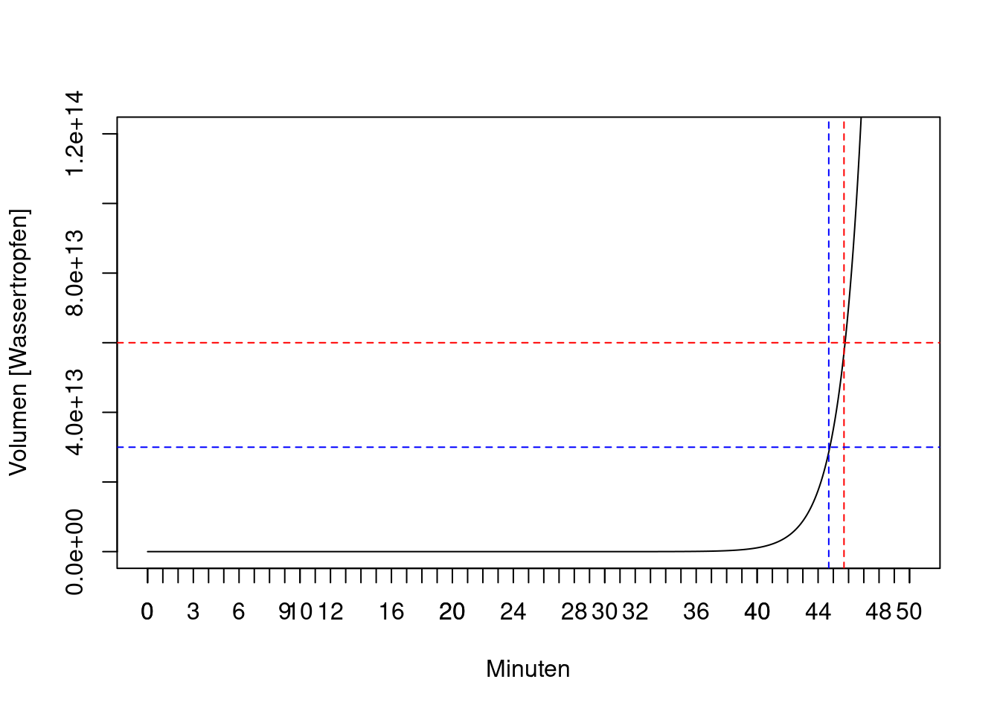

The greatest shortcoming of the human race is the inability to understand the exponential function. (Al Bartlett)
Problem
Sie sitzen zuoberst in einem Fussball-Stadion; es hat Platz für \(6\times 10^{13}\) Wassertropfen. Es beginnt mit einem Tropfen, der in der ersten Minute ins Stadion tröpfelt. Jede Minute verdoppelt sich die Anzahl Tropfen. Lange passiert nichts Besonderes. Sie sehen die Gefahr nicht kommen. Von der Hälfte bis ganz oben geht es plötzlich sehr schnell. Es würde auch nicht viel bringen, wenn das Stadion noch viel grösser wäre; wir haben exponentielles Wachstum.
Code
max<-3e06*20e06##Volumen Allianz-Arenahalb<-max/2max2<-max*2tmax<-50t<-seq(0,tmax,by=0.1)expwachs<-function(t){y<-1*2^(t/1)}plot(t,expwachs(t),type="l",ylim=c(0,max2),main="",ylab="Volumen [Wassertropfen]", xlab="Minuten")axis(side =1, at =seq(0,tmax,by=1))abline(h=max,lty=2,col="red")abline(v=t[458],lty=2,col="red")abline(h=halb,lty=2,col="blue")abline(v=t[448],lty=2,col="blue")

Exponentielles Wachstum
Exponentialfunktion
Jede Exponentialfunktion \(a^x\) mit \(a>1\) wächst ab einem gewissen \(x\) schneller als jede lineare Funktion \(a+bx\).
with \(t\): time, \(\tau\): \(e\)-folding time, \(T\): doubling time, \(k\): growth constant. 1
Bei Verdoppelung alle 2 Tage: \(2^{t/2}=(2^{1/2})^t=1.41^t\)
Bei Verdoppelung alle 3 Tage: \(2^{t/3}=(2^{1/3})^t=1.26^t\)
Bei Verdoppelung alle 7 Tage: \(2^{t/7}=(2^{1/7})^t=1.1^t\)
Bei Verdoppelung alle 10 Tage: \(2^{t/10}=(2^{1/10})^t=1.07^t\)
Covid-19
Inzidenz und kumulierte Inzidenz
Code
data<-read.csv("https://raw.githubusercontent.com/CSSEGISandData/COVID-19/master/csse_covid_19_data/csse_covid_19_time_series/time_series_covid19_confirmed_global.csv",check.names=FALSE)sw<-data[data$"Country/Region"=="Switzerland",-c(1,2,3,4)]cases<-as.numeric(sw[-c(1:42)])incid<-diff(cases)t<-1:length(incid)ma<-function(x, n=7){stats::filter(x, rep(1/n, n), sides =2)}##moving average over 7 daysincidAv<-ma(incid)plot(t,incid,type="l",col="blue",lty=2,xlab="Tage")lines(t,incidAv,col="red",lwd=2)
Erste Welle. Example of doubling times: 1 day (solid), 2 days (dashed), 3 days (red), seven days (dotted), with reported cases Covid19 in Switzerland. Horizontal line: swiss population. On a logarithmic scale, a straight line indicates exponential growth. Quelle.
Auswirkung Vorfaktor
Annahme: Verdoppelung alle drei Tage, 10 Prozent der Infizierten müssen ins Spital. Die Anzahl Cases von heute sind die Anzahl Spitalpatienten in 9 Tagen, wenn mann nichts macht.
Analog kann man zeigen: Wenn die Mortalitätsrate bei einem Prozent der bestätigten Fälle liegt, dann ist die Anzahl der bestätigten Fälle die zu erwartende Anzahl der Todesfälle ca. 18 Tage später, wenn man nichts macht.